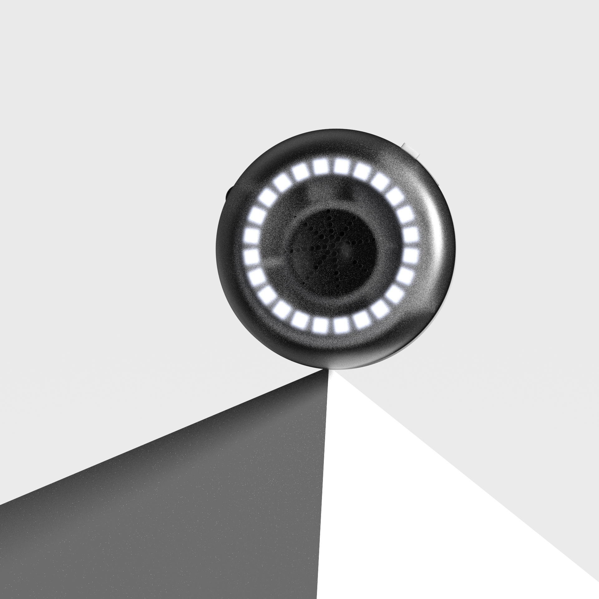
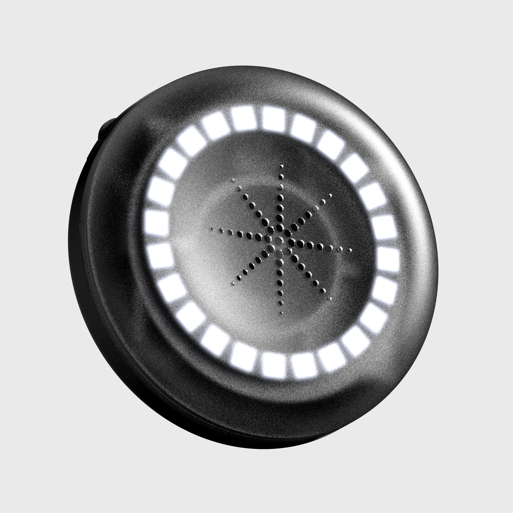
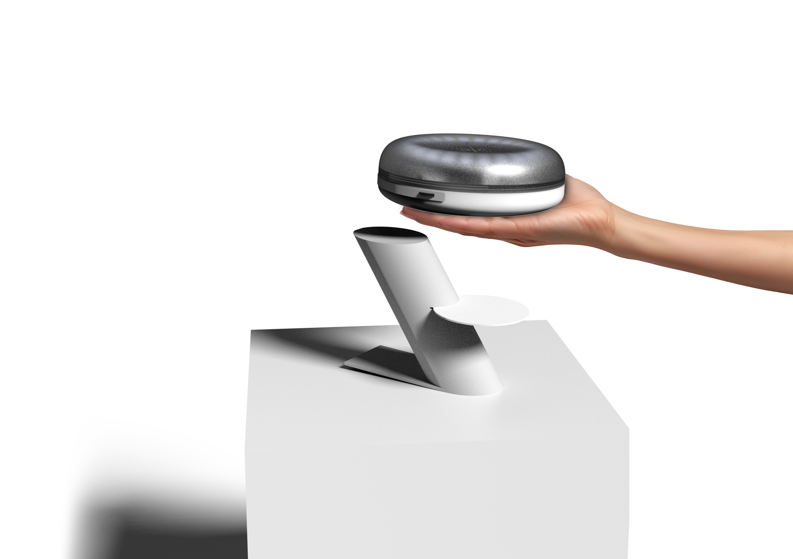
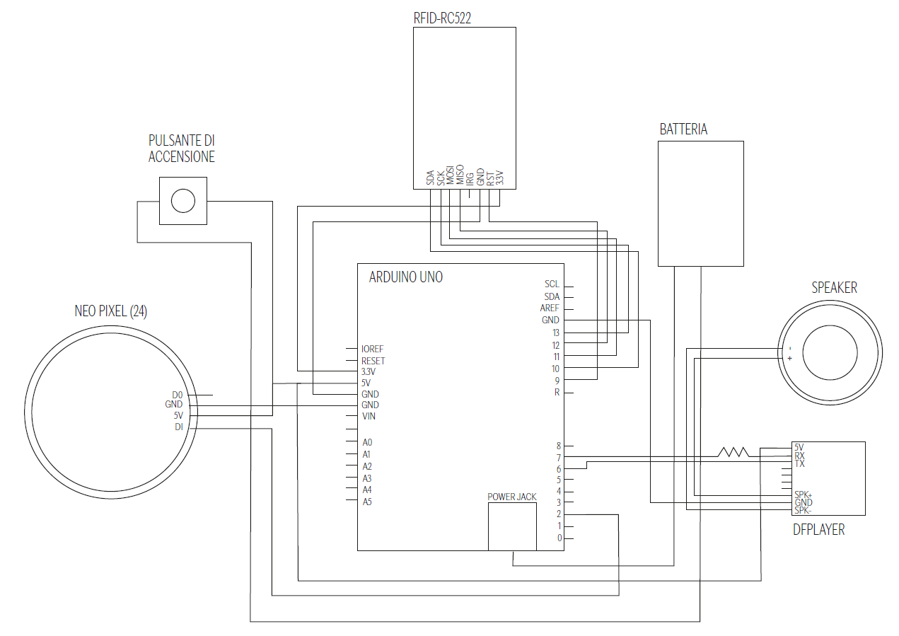

"Sound Rituals" is an interactive installation designed to enhance the Archaeological and Ethnographic Museum of Santarcangelo in Romagna, through sound-based interaction.
The project transforms archival objects into active narrative elements. Each selected artifact is equipped with a tag that triggers a specific sound when approached with a portable device. As visitors move through the space, sounds overlap and merge, creating an evolving and collective composition.
Rather than presenting a linear story, the installation embraces fragmentation and layering.
The visitor’s path turns into a sensory exploration in which sound acts as a medium of interpretation, connecting tangible heritage with contemporary experience.
The project was developed for the storage space of the MET – Museo degli Usi e Costumi della Gente di Romagna in Santarcangelo. The archive appears dense and unstructured, where objects accumulate without a clear linear order. Rather than reorganizing the space, the project embraces this apparent disorder as a narrative resource.
Inspired by the concept of “positive disorder”, the installation activates the objects without altering their position, allowing visitors to explore the archive freely and build their own interpretative path through sound. Each selected artifact becomes an active catalyst for memory.


Visitors receive a portable device and move through the space autonomously. By approaching specific tagged objects, they trigger sound loops associated with tools, domestic artifacts, and traditional crafts. The interaction is non-linear: sounds overlap progressively, generating an evolving composition — a personal “sound ritual” — shaped by the visitor’s unique movements.
The system is based on NFC technology integrated into object tags. The device includes an NFC module for recognition, an Arduino microcontroller for real-time sound management, and a DFPlayer for audio playback. A circular LED ring provides immediate visual feedback, turning technology into an intangible interface.

